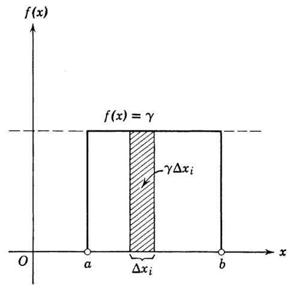
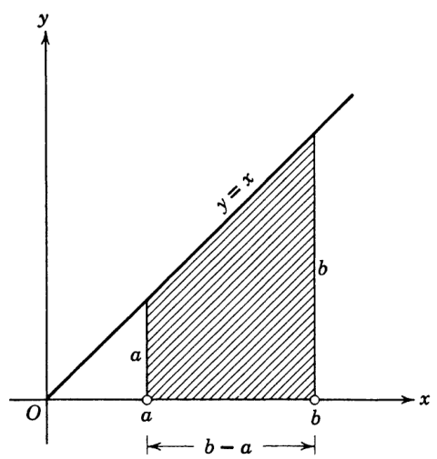
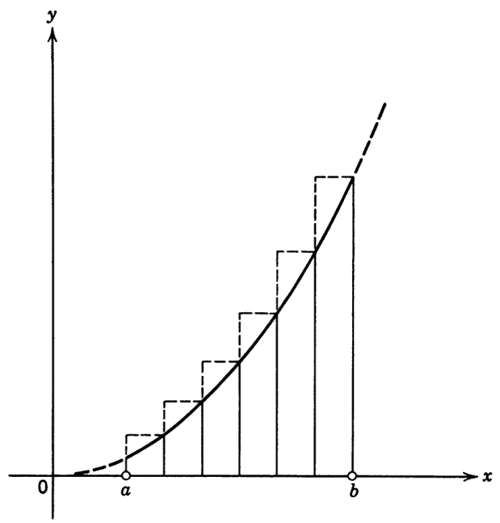
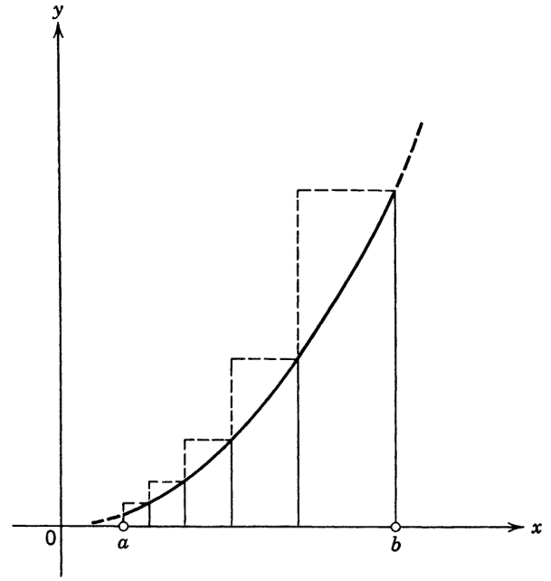

对好些重要的函数，现在已经能按照规定的极限过程求出它们的积分。我们的做法是适当选取中间点 ξi（通常取小区间的左端点或右端点），使和 Fn 可以显式地算出。由连续函数积分的存在定理可知，无论另怎样选取中间点 ξi，怎样分割区间，所得 Fn 的极限都相同。
a. 线性函数的积分
先对初等几何中熟悉的几个简单图形，验证积分确实给出正确的面积值。
设 f(x)=常数=γ。为了求 f(x) 在 a 与 b 之间的积分，作出和 Fn（图 2.10）。因为这里 f(ξi)=γ，所以
Fn=i=1∑nγΔxi=γi=1∑nΔxi=γ(b−a).因此也有
n→∞limFn=∫abγdx=γ(b−a).这正是高为 γ、底为 b−a 的矩形的面积公式。

图 2.10 常数的积分
从初等几何知道，函数 f(x)=x 的积分 ∫abxdx（图 2.11）的值为
21(b−a)(b+a)=21(b2−a2).为了从分析上验证我们的极限过程给出相同的结果，用分点
a+h,a+2h,…,a+(n−1)h把从 a 到 b 的区间分成 n 等份，其中 h=(b−a)/n。在各小区间中取右端点为 ξi，于是所求积分是下列和在 n→∞ 时的极限：
Fn=(a+h)h+(a+2h)h+⋯+(a+nh)h=nah+(1+2+3+⋯+n)h2=nah+21n(n+1)h2.这里用到了熟知的等差数列求和公式（见第 111 页习题 3）。代入 h=(b−a)/n，就有
Fn=a(b−a)+21(1+n1)(b−a)2,立即得到
n→∞limFn=a(b−a)+21(b−a)2=21(b2−a2).
图 2.11
b. x2 的积分
若要用初等几何求函数 f(x)=x2 的积分，即求一段抛物线弧、一段 x 轴和两条纵线段围成的面积，¹ 就没有这么容易了。这里需要一个真正的极限过程。设 a<b，分点和中间点仍照上例选取（图 2.12）。于是 x2 在积分限 a 与 b 之间的积分等于下列和的极限：
Fn=(a+h)2h+(a+2h)2h+⋯+(a+nh)2h=na2h+2ah2(1+2+3+⋯+n)+h3(12+22+32+⋯+n2).用括号内两个和的已知公式（见第 58 页），可得
Fn=na2h+n(n+1)ah2+61n(n+1)(2n+1)h3=a2(b−a)+(1+n1)a(b−a)2+61(1+n1)(2+n1)(b−a)3.由于 limn→∞1/n=0，便有
n→∞limFn=a2(b−a)+a(b−a)2+31(b−a)3=31(b3−a3).从而，当 a<b 时，
∫abx2dx=31(b3−a3).原注 1（第 130 页） 求区域的面积有时也称为把区域“化方”。

图 2.12 按等差数列分割以求抛物线弧下的面积
*c. xα 的积分，α 为不等于 −1 的整数
以下例子说明，有时可以用特殊的初等技巧求积分。到了第 2.9d 节（第 191 页），用一般方法就能更简便地得到同样的结果。
把处理 x 和 x2 的论证推广到 x3,x4,…，可得关系式
∫abxαdx=α+11(bα+1−aα+1),(1)其中 α 为任意正整数。证明时可以找出和 1α+2α+⋯+nα 所满足的适当公式。例如，
n→∞lim[(1α+2α+⋯+nα)nα+11]=α+11,就可以对 α 用归纳法证明（见第 113 页习题 16）。后面还要用别的方法证明公式 (1)，方法更简单，结论也更一般，从中可见我们将要发展的方法的力量。届时公式将推广到除 α=−1 以外的一切实数 α。
好在积分的定义允许自由选择分割，因而可用简便得多的方法求积分。分点不必等距，可以取“公比” q=nb/a，用等比数列的各项
a, aq, aq2,…,aqn−1, aqn=b分割区间 [a,b]（图 2.13），这样只需求一个等比数列的和。分点为 xi=aqi，第 i 个小区间的长度为
Δxi=aqi−aqi−1=qaqi(q−1).最大的 Δxi 是最后一个，即 Δxn=b(q−1)/q。当 n→∞ 时，q 趋于 1（见第 64 页例 d），因而最大的小区间长度 Δxn 趋于零，各小区间的长度也就都趋于零。中间点 ξi 仍取各小区间的右端点 xi。

图 2.13 按等比数列分割以求抛物线弧下的面积
由公比为 q1+α 的等比数列求和公式，可以显式求出
Fn=i=1∑n(ξi)αΔxi=i=1∑n(aqi)αaqiqq−1=aα+1qq−1i=1∑n(q1+α)i.(2)应用熟知的公式（第 67 页），有
Fn=aα+1qq−1qα+1qα+1−1qn(α+1)−1=aα+1(q−1)qαqα+1−1(b/a)α+1−1=(bα+1−aα+1)qαqα+1−1q−1.因 q=1，再次利用等比数列求和公式可写成
q1+α−1q−1=qα+qα−1+⋯+11.当 n→∞ 时，q 的各次幂都趋于 1，因而
n→∞limFn=1+α1(b1+α−a1+α).这样就在 0<a<b、α 为任意正整数时验证了积分公式 (1)。
同样的方法对负整数 α 也适用，只要 α=−1。和前面一样，可得
Fn=(bα+1−aα+1)qαqα+1−1q−1=(bα+1−aα+1)q(1−q−α−1)q−1.这里 −α 为大于 1 的正整数。利用等比数列的公式，有
q1(q−α−1−1q−1)=q−α−1+q−α−2+⋯+q1,当 n→∞ 时，它趋于 1/(−α−1)。所以仍同前一样，
n→∞limFn=α+11(bα+1−aα+1).若 α=−1，积分公式便失去意义，因为右边的分子和分母都是零。回到 Fn 的原式 (2)，在 α=−1 时却有 Fn=n(q−1)/q。注意 n→∞ 时 q=nb/a 趋于 1，便得
∫abx1dx=n→∞limn(nb/a−1).(3)右边的极限不能用 a,b 的幂表示，但可以用它们的对数表示，后面就会看到（第 145 页）。
*d. xα 的积分，α 为不等于 −1 的有理数
刚得到的结果还可大为推广，而证明并不因此显著复杂起来。设 α=r/s 是正有理数，r,s 为正整数。上面计算积分的过程，只有求 q 趋于 1 时 (q−1)/(qα+1−1) 的极限这一步需要改动。此式现在为 (q−1)/(q(r+s)/s−1)。置 q1/s=τ（τ=1），则 q 趋于 1 时 τ 也趋于 1。我们要求的就是 τ 趋于 1 时 (τs−1)/(τr+s−1) 的极限。分子、分母同时除以 τ−1，再像前面那样利用等比数列的公式，极限就成为
τ→1limτr+s−1+τr+s−2+⋯+1τs−1+τs−2+⋯+1.分子、分母都是 τ 的连续函数，直接代入 τ=1 就得 s/(r+s)=1/(α+1)。因此对每个正有理数 α，所得积分公式与正整数时相同：
∫abxαdx=α+11(bα+1−aα+1).当 α=−r/s 为负有理数时，这个公式仍然成立，只须排除 α=−1（此时上面所用的等比数列求和公式失去意义）。对负的 α=−r/s，可置 q−1/s=τ，再次求出 (q−1)/(qα+1−1) 的极限。这一计算留给读者。
自然会猜想，这个公式也适用于无理数 α。到第 2.7 节（第 154 页），我们将由一般理论出发，用相当简单的方法对一切实数 α（α=−1 除外）建立这一积分公式。
*e. sinx 与 cosx 的积分
这里最后一个用特殊技巧处理的初等例子，是 f(x)=sinx 的积分。把积分区间分成长度为 h=(b−a)/n 的小区间，显然，积分 ∫absinxdx 就是和
Sh=h[sin(a+h)+sin(a+2h)+⋯+sin(a+nh)]的极限。把右边的表达式乘以 2sin(h/2)，再用熟知的三角公式
2sinusinv=cos(u−v)−cos(u+v).只要 h 不是 2π 的整数倍，就有
Sh=2sin(h/2)h[=2sin(h/2)h[cos(a+2h)−cos(a+23h)+cos(a+23h)−cos(a+25h)+⋯+cos(a+22n−1h)−cos(a+22n+1h)]cos(a+2h)−cos(a+22n+1h)].因为 a+nh=b，积分便等于 h→0 时下式的极限：
2sin(h/2)h[cos(a+2h)−cos(b+2h)].由第一章（第 84 页）知道，当 h→0 时，(h/2)/sin(h/2) 趋于 1。所求极限就只是 cosa−cosb，于是
∫absinxdx=−(cosb−cosa).同样，
∫abcosxdx=sinb−sina（见第 196 页习题 3）。
译者注 这里乘以 2sin(h/2) 是为了把每一项改写成相邻两个余弦值之差。后一项的第一个余弦恰好抵消前一项的第二个余弦，整串求和最后只留下首尾两项。
上面的每一个例子都用了特殊的技巧。系统的积分学和微分学的要点，恰好在于可以用一般性的考虑直接得出结果，免去逐题设法。为得到这些方法，下面先讨论积分的一些一般法则，随后引入导数的概念，最后建立积分与导数之间的联系。